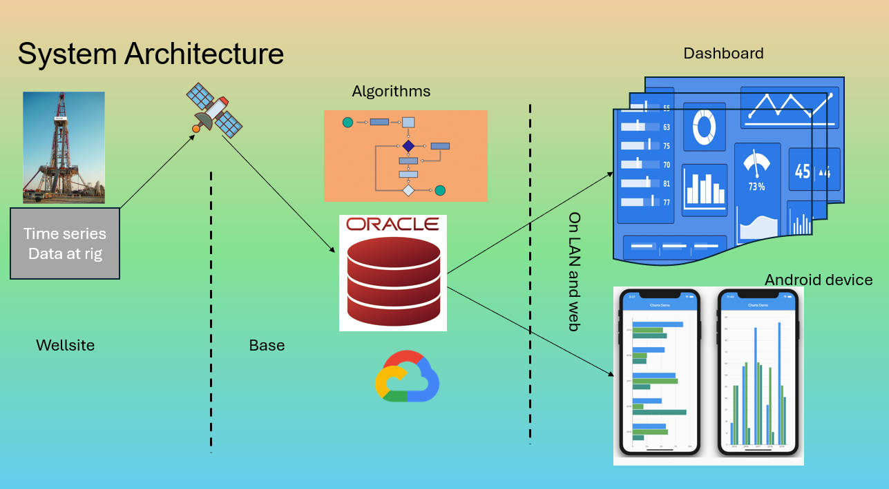

Drilling performance KPIs measure the performance of a drilling team from the time series data generated during their shift.
Drilling performance KPIs help quantify performance of teams.
These KPIs also define a benchmark for best practice and optimum performance.
Drilling KPIs give an insight into the areas of improvement.
They help compare performance of one team to another
They also help compare the performance of one contractor to another.
Drilling KPIs help take informed decision by drilling project management teams.
Database could be Oracle with PL SQL programming for KPI logic. Oracle has features to display KPIs.
Big Database : Python programming can be done for KPI algorithm on top of a big data. Python has libraries for display of data.
